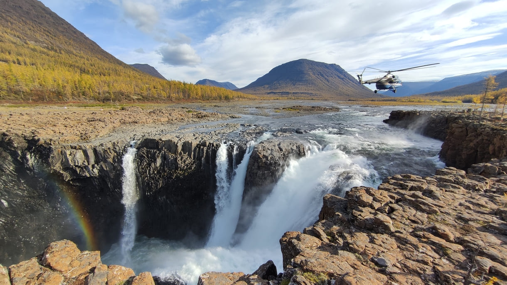
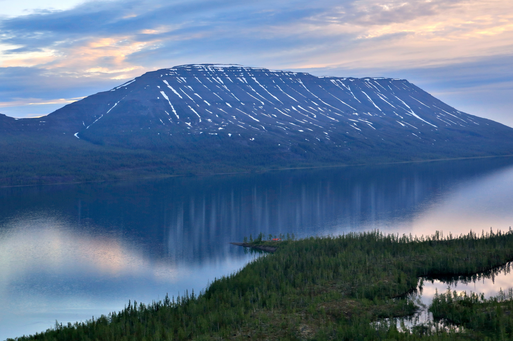
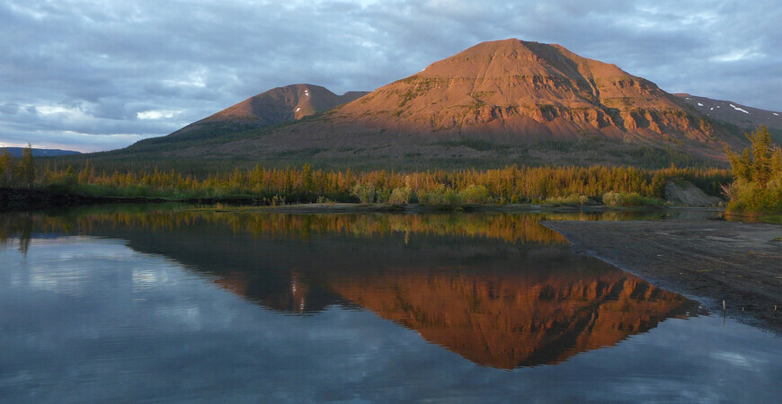
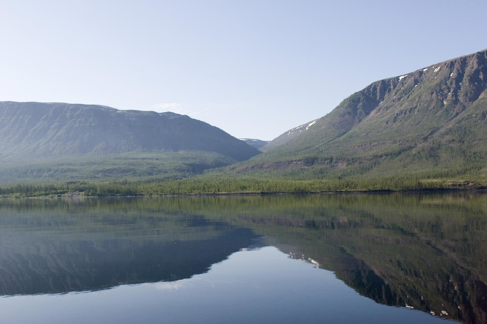
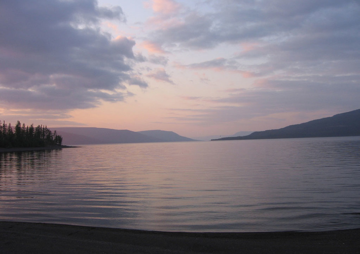

Плато Путорана можно назвать одним из самых красивых мест Красноярского края. Живописное плато вулканического происхождения недалеко от Норильска сформировалось примерно 10-12 миллионов лет назад. Его название переводится с юкагирского языка как «горы без вершин», что довольно точно описывает здешний ландшафт. Всё плато усеяно так называемыми столовыми горами с плоскими вершинами высотой до 1700 метров.
Путорана — сильно расчленённый горный массив (плато), расположенный на северо-западе Среднесибирского плоскогорья. На севере и западе плато обрывается крутым уступом (800 и более м), в то время как южная и восточная части характеризуются пологими склонами. Среди высочайших вершин Путорана — горы Камень (1701 м), Холокит (1542 м), Котуйская (1510 м). На севере плато Путорана граничит с Таймыром. Площадь плато составляет 250 тыс. км² (сравнима с территорией Великобритании). На территории плато расположен Путоранский заповедник, признанный ЮНЕСКО памятником Всемирного наследия. Административно плато расположено на северо-западе Красноярского края, занимая территорию Таймырского Долгано-Ненецкого и Эвенкийского муниципальных районов. Ближайшим крупным населённым пунктом является город Норильск.
Условной южной границей плато Путорана является Северный полярный круг, поэтому район находится в зоне сурового, резко континентального климата, однако в отдельных озёрных долинах (например озеро Лама) имеется свой, значительно более мягкий микроклимат, защищённый от северных ветров. Полярный день летом постепенно сменяется на полярную ночь зимой. Весна, лето и осень укладываются в три месяца: июнь, июль, август, остальное время — зима с температурой до −40 °C. В самый тёплый месяц (июль) температура воздуха достигает +16 °C. Осадков выпадает 500—800 мм, преимущественно летом, зимой снежный покров невелик.
Территория плато находится на границе тайги и тундры. Здесь происходит чередование самых разнообразных ландшафтов: суровые горные тундры расположены рядом с лиственничным редколесьем, а заросли кустарников — с еловыми лесами. На вершинах гор находится зона арктических каменистых пустынь с небольшими участками ледников. Растительность представлена лиственнично-еловыми лесами в долинной части плато, редколесьем и кустарниковой тундрой на верхних участках склонов и поверхности плато.
Через территорию плато пролегает миграционный путь крупнейшей в Евразии таймырской популяции дикого северного оленя. Здесь обитают бурый медведь и волк. В горной тундре водятся снежные бараны-толстороги. Для их защиты и сохранения создавался Путоранский заповедник. Они считаются редчайшими животными, которых в России можно встретить еще лишь на хребтах Камчатки. Есть здесь и редкие птицы: белокрылый кречет и подкаменный глухарь. В чистой речной воде много рыбы, в том числе здесь обитают таймень, сибирский хариус, омуль.
По количеству водопадов Путорана занимает первое место в России. На плато находятся верховья рек Курейка (бассейн Енисея), Пясина, Хета, Котуй, Иркинда, а также правых притоков Нижней Тунгуски (бассейн Енисея). Реки, пробивая себе дорогу через многослойные породы, образуют глубокие каньоны, пороги и водопады.
Здесь же находится и самый высокий водопад России (а по некоторым утверждениям, и Евразии) — Тальниковый, высотой около 600 метров.
Плато включает в себя множество озер — около 25 тысяч! Среди них можно выделить несколько особо интересных для посещения водоемов.
Озеро Глубокое называют воротами плато. Его западный край находится в низменности, а дальний — восточный — располагается в горах. Даже в летнее время на побережье и водной глади можно увидеть нерастаявший лед.
Чистейшее озеро Лама (120 км от Норильска) является одним из самых глубоких и рыбных озер России. На языке тунгусов и эвенков название озера означает «море» или «большая вода». По оценке ученых, возраст озера — около 100 млн лет. Его окрестности считаются одним из красивейших мест Красноярского края; озеро окружено сопками плата со всех сторон
Хантайское озеро — самое крупное и глубокое. Из-за разгула ветров здесь царит штормовая погода. В сентябре она бывает чаще, чем штиль.
Озеро Виви утверждено в качесве географического центра России. Оно является пресноводным, богато рыбой.
Плато Путорана образовалось 252 миллиона лет назад, на рубеже палеозоя и мезозоя. Тогда излилась огромная масса раскалённых базальтов, а в толще возникли тектонические разломы. Различия в их толщине привели к созданию ступенчатых склонов. Так в некоторых местах гор можно насчитать до 40 слоёв!
Коренным населением Путорана считаются эвенки и долганы. Следами их пребывания являются статуи из ствола лиственницы, однако поселения этих народов в этом регионе отсутствуют.
Плато Путорана впервые исследовано и научно описано российским исследователем А. Ф. Миддендорфом (1815—1894) в 1844 году. В память о нём в 1902 году предлагалось назвать горы хребтом Миддендорфа. Название «Путорана» впервые нанёс на карту Н. Н. Урванцев, услышав его от проводника Эльбея в экспедиции 1921 года.
В 1938 году на озеро Лама для лесозаготовок привезли первых заключённых, но директор комбината быстро разглядел в озере рекреационный потенциал и приказал организовать на Ламе зону отдыха для работников Норильского комбината. Уже летом 1939 года параллельно строящемуся дому отдыха был разбит палаточный пионерский лагерь. В 1944 году здесь появился первый деревянный санаторий на 40 семей, спроектированный архитектором Фёдором Усовым.
Впоследствии на Плато Путорана были произведены подземные ядерные взрывы в целях создания подземных емкостей-газохранилищ